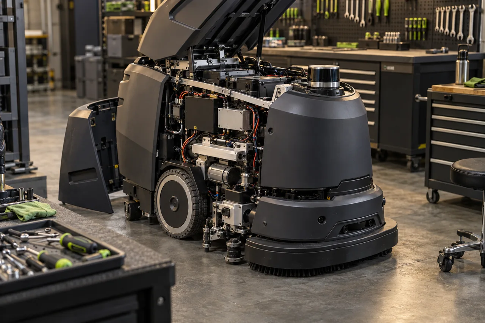
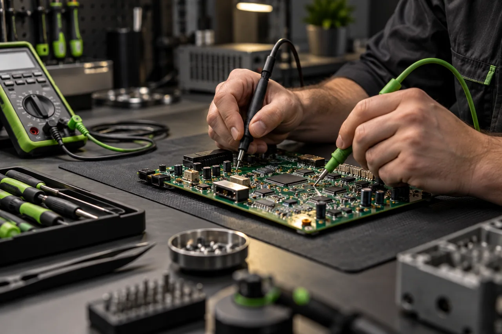
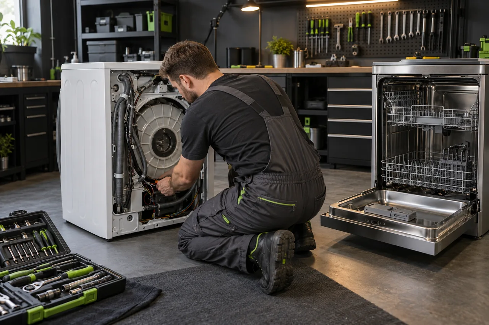
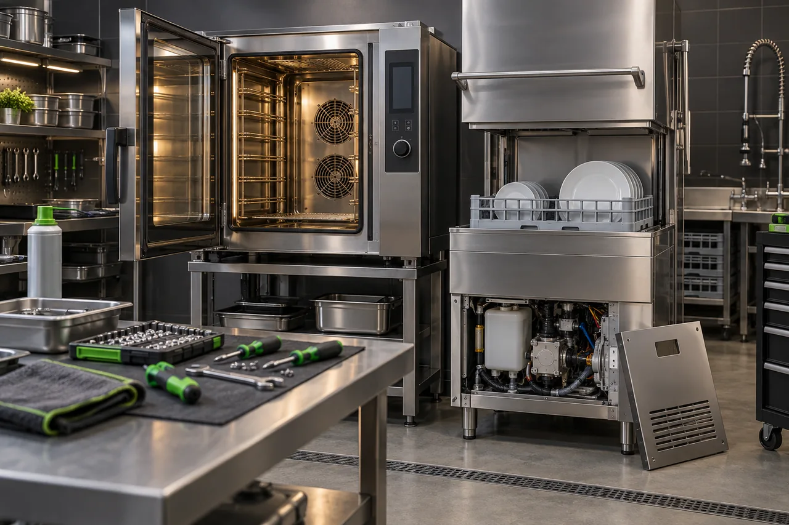

Диагностика
Питание, датчики, приводы, механика, электроника и программные ошибки.
Подробнее ↗Диагностика, ремонт и обслуживание робототехники, бытовой, профессиональной и электронной техники. Сначала находим причину — затем устраняем её и проверяем результат.

Разбираемся в симптоме, проверяем узлы и предлагаем решение на основании диагностики.
Питание, датчики, приводы, механика, электроника и программные ошибки.
Подробнее ↗Восстановление узлов, компонентов и соединений с последующим тестированием.
Подробнее ↗Очистка, профилактика, настройка, контроль состояния и подготовка к работе.
Подробнее ↗Сложные, повторяющиеся и нестандартные неисправности.
Подробнее ↗От сервисных роботов до плат управления и бытовых приборов.
Сервисные и уборочные роботы, приводы, датчики, платы и системы управления.
Открыть направление ↗
Платы, блоки питания, модули управления и восстановление электроники.
Открыть направление ↗
Стиральные и посудомоечные машины, кухонная и другая техника со сложной электроникой.
Открыть направление ↗
Оборудование с интенсивной нагрузкой: питание, нагрев, механика и системы управления.
Открыть направление ↗Мы не просто меняем деталь. Мы ищем первопричину, проверяем её и только затем возвращаем технику в работу.
Что происходит, когда и при каких условиях.
От питания и сигналов до механики и управляющих модулей.
Проверяем работу после ремонта под реальной нагрузкой.
Расскажите, что произошло, и приложите фото или видео.
Проверяем причину и согласовываем дальнейшие действия.
Восстанавливаем неисправный узел и выполняем настройку.
Проверяем результат и передаём технику в работу.
Опишите проблему. Фото, видео и код ошибки помогут инженеру быстрее понять ситуацию.
Да. Диагностика отделена от ремонта: сначала определяем неисправность и согласовываем дальнейшие действия.
Да. Фото, видео и код ошибки помогают быстрее сформировать первичную гипотезу.
Основной профиль — робототехника, электроника, бытовое и профессиональное оборудование со сложными системами управления.